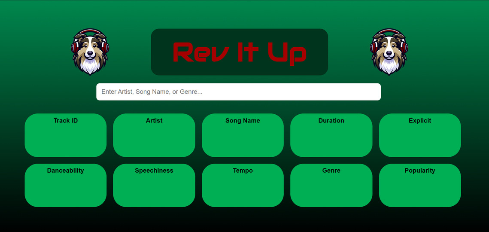

Technical Portfolio
Grilled Cheese Food Truck
I built a JavaFX-based simulator that models the operations of a grilled cheese food truck with both a customer view and admin panel. The customer view simulates a vending-style experience with a real-time inventory updates, while the admin panel lets managers restock items, track sales, and reset statistics when needed. The program also includes persistent data storage, so sales are saved even after closing and reopening. This project strengthened my skills in JavaFX, OOP design, and GUI styling.


Grilled Cheese Food Truck Github
Rev It Up
I built a Spotify recommendation system that suggests songs based on the statistical features of a dataset. The dataset contained over 10,000 entries with attributes such as tempo, danceability, energy, and popularity. Using these stats, we developed a machine learning model that compares songs and recommends new tracks with about 90% accuracy. To make the project interactive, my team and I created a React-based user interface where users can enter an artist, song, or genre and receive tailored recommendations. This project strengthened my skills in machine learning, data analysis, and front-end development.
Rev It Up Github